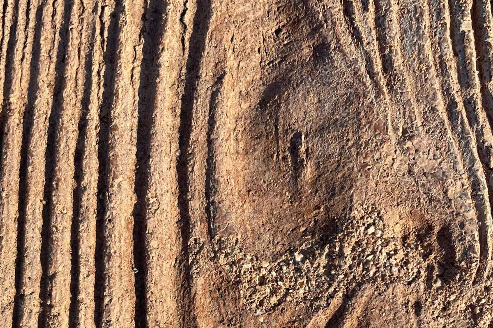
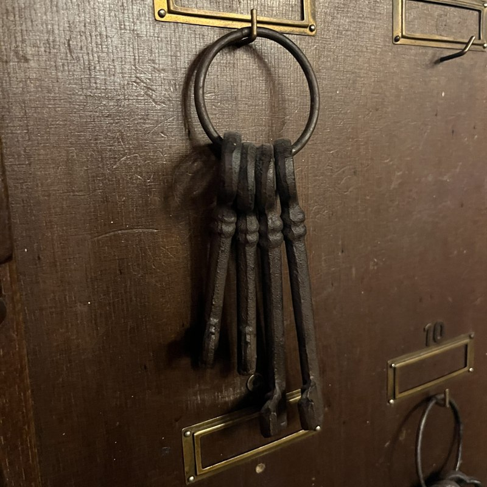

旧七谷郵便局舎
かつて便りが行き交った建物が、いま、カフェになっています。昭和10年(1935年)に建てられた木造2階建ての建物で、加茂市指定文化財です。
- 建築
- 昭和10年(1935年)
- 構造
- 木造2階建て
- 名称
- 鶴巻家住宅
- 指定
- 加茂市指定文化財

サンプル写真3つの節目
-
1935年(昭和10年)
木造2階建ての建物として建てられました。
-
加茂市指定文化財
昭和初期のモダンでレトロな雰囲気を残す建物として、加茂市の指定文化財になっています。
-
2025年11月
文化財の郵便局舎をリノベーションし、カフェとしてオープンしました。
所々に、郵便局舎の名残があります
お客様の声には、「所々に名残があります」という一言があります。どこが、どのような名残なのかは、ここでは書きません。ご来店の折に、探してみてはいかがでしょうか。

サンプル写真1階と2階
客席は、1階と2階にあります。
口コミによると、2階への階段は昔ながらの急な造りとのことです。上り下りの際は、足元にご注意ください。
- 1階
- 客席があります。休日の午後は、ほぼ満席になっていたというお声があります。
- 2階
- 客席があります。
木々の緑と、ゆったりとした時間
店内には、ゆったりとしたBGMが流れています。お客様の声には、居心地が良かったという感想や、「ゆっくりと過ごせます」という言葉があります。まわりは木々の緑に囲まれています。お一人でも、デートでも、ご家族でも、というお声も届いています。
「木々の緑に囲まれているのでそれだけで癒しになります」
ご来店の前に
口コミによると、2階への階段は昔ながらの急な造りとのことです(足元にご注意ください) / お支払いは現金のみとのことです / お水はセルフサービスとのことです
お問い合わせ・最新の営業情報は、InstagramまたはGoogleマップからご確認ください。